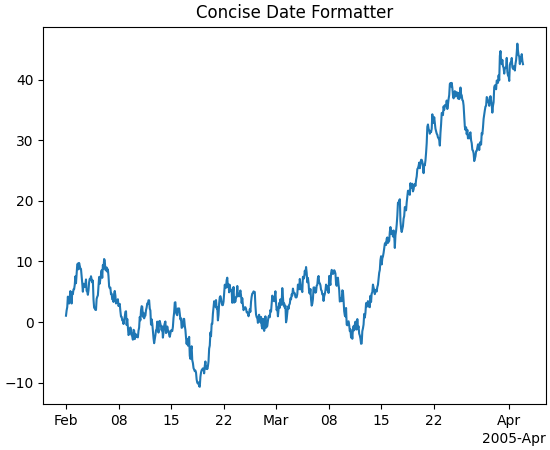

matplotlib.dates¶
Matplotlib provides sophisticated date plotting capabilities, standing on the
shoulders of python datetime and the add-on module dateutil.
Matplotlib date format¶
Matplotlib represents dates using floating point numbers specifying the number
of days since a default epoch of 1970-01-01 UTC; for example,
1970-01-01, 06:00 is the floating point number 0.25. The formatters and
locators require the use of datetime.datetime objects, so only dates between
year 0001 and 9999 can be represented. Microsecond precision
is achievable for (approximately) 70 years on either side of the epoch, and
20 microseconds for the rest of the allowable range of dates (year 0001 to
9999). The epoch can be changed at import time via dates.set_epoch or
rcParams["dates.epoch"] to other dates if necessary; see
Date Precision and Epochs for a discussion.
Note
Before Matplotlib 3.3, the epoch was 0000-12-31 which lost modern microsecond precision and also made the default axis limit of 0 an invalid datetime. In 3.3 the epoch was changed as above. To convert old ordinal floats to the new epoch, users can do:
new_ordinal = old_ordinal + mdates.date2num(np.datetime64('0000-12-31'))
There are a number of helper functions to convert between datetime
objects and Matplotlib dates:
datestr2num |
Convert a date string to a datenum using dateutil.parser.parse. |
date2num |
Convert datetime objects to Matplotlib dates. |
num2date |
Convert Matplotlib dates to datetime objects. |
num2timedelta |
Convert number of days to a timedelta object. |
drange |
Return a sequence of equally spaced Matplotlib dates. |
set_epoch |
Set the epoch (origin for dates) for datetime calculations. |
get_epoch |
Get the epoch used by dates. |
Note
Like Python's datetime.datetime, Matplotlib uses the Gregorian calendar
for all conversions between dates and floating point numbers. This practice
is not universal, and calendar differences can cause confusing
differences between what Python and Matplotlib give as the number of days
since 0001-01-01 and what other software and databases yield. For
example, the US Naval Observatory uses a calendar that switches
from Julian to Gregorian in October, 1582. Hence, using their
calculator, the number of days between 0001-01-01 and 2006-04-01 is
732403, whereas using the Gregorian calendar via the datetime
module we find:
In [1]: date(2006, 4, 1).toordinal() - date(1, 1, 1).toordinal()
Out[1]: 732401
All the Matplotlib date converters, tickers and formatters are timezone aware.
If no explicit timezone is provided, rcParams["timezone"] (default: 'UTC') is assumed. If you want to
use a custom time zone, pass a datetime.tzinfo instance with the tz keyword
argument to num2date, plot_date, and any custom date tickers or
locators you create.
A wide range of specific and general purpose date tick locators and
formatters are provided in this module. See
matplotlib.ticker for general information on tick locators
and formatters. These are described below.
The dateutil module provides additional code to handle date ticking, making it easy to place ticks on any kinds of dates. See examples below.
Date tickers¶
Most of the date tickers can locate single or multiple values. For example:
# import constants for the days of the week
from matplotlib.dates import MO, TU, WE, TH, FR, SA, SU
# tick on mondays every week
loc = WeekdayLocator(byweekday=MO, tz=tz)
# tick on mondays and saturdays
loc = WeekdayLocator(byweekday=(MO, SA))
In addition, most of the constructors take an interval argument:
# tick on mondays every second week
loc = WeekdayLocator(byweekday=MO, interval=2)
The rrule locator allows completely general date ticking:
# tick every 5th easter
rule = rrulewrapper(YEARLY, byeaster=1, interval=5)
loc = RRuleLocator(rule)
The available date tickers are:
MicrosecondLocator: Locate microseconds.SecondLocator: Locate seconds.MinuteLocator: Locate minutes.HourLocator: Locate hours.DayLocator: Locate specified days of the month.WeekdayLocator: Locate days of the week, e.g., MO, TU.MonthLocator: Locate months, e.g., 7 for July.YearLocator: Locate years that are multiples of base.RRuleLocator: Locate using amatplotlib.dates.rrulewrapper.rrulewrapperis a simple wrapper around dateutil'sdateutil.rrulewhich allow almost arbitrary date tick specifications. See rrule example.AutoDateLocator: On autoscale, this class picks the bestDateLocator(e.g.,RRuleLocator) to set the view limits and the tick locations. If called withinterval_multiples=Trueit will make ticks line up with sensible multiples of the tick intervals. E.g. if the interval is 4 hours, it will pick hours 0, 4, 8, etc as ticks. This behaviour is not guaranteed by default.
Date formatters¶
The available date formatters are:
AutoDateFormatter: attempts to figure out the best format to use. This is most useful when used with theAutoDateLocator.ConciseDateFormatter: also attempts to figure out the best format to use, and to make the format as compact as possible while still having complete date information. This is most useful when used with theAutoDateLocator.DateFormatter: usestrftimeformat strings.IndexDateFormatter: date plots with implicit x indexing.
-
class
matplotlib.dates.AutoDateFormatter(locator, tz=None, defaultfmt='%Y-%m-%d')[source]¶ Bases:
matplotlib.ticker.FormatterA
Formatterwhich attempts to figure out the best format to use. This is most useful when used with theAutoDateLocator.The AutoDateFormatter has a scale dictionary that maps the scale of the tick (the distance in days between one major tick) and a format string. The default looks like this:
self.scaled = { DAYS_PER_YEAR: rcParams['date.autoformat.year'], DAYS_PER_MONTH: rcParams['date.autoformat.month'], 1.0: rcParams['date.autoformat.day'], 1. / HOURS_PER_DAY: rcParams['date.autoformat.hour'], 1. / (MINUTES_PER_DAY): rcParams['date.autoformat.minute'], 1. / (SEC_PER_DAY): rcParams['date.autoformat.second'], 1. / (MUSECONDS_PER_DAY): rcParams['date.autoformat.microsecond'], }
The algorithm picks the key in the dictionary that is >= the current scale and uses that format string. You can customize this dictionary by doing:
>>> locator = AutoDateLocator() >>> formatter = AutoDateFormatter(locator) >>> formatter.scaled[1/(24.*60.)] = '%M:%S' # only show min and sec
A custom
FuncFormattercan also be used. The following example shows how to use a custom format function to strip trailing zeros from decimal seconds and adds the date to the first ticklabel:>>> def my_format_function(x, pos=None): ... x = matplotlib.dates.num2date(x) ... if pos == 0: ... fmt = '%D %H:%M:%S.%f' ... else: ... fmt = '%H:%M:%S.%f' ... label = x.strftime(fmt) ... label = label.rstrip("0") ... label = label.rstrip(".") ... return label >>> from matplotlib.ticker import FuncFormatter >>> formatter.scaled[1/(24.*60.)] = FuncFormatter(my_format_function)
Autoformat the date labels. The default format is the one to use if none of the values in
self.scaledare greater than the unit returned bylocator._get_unit().
-
class
matplotlib.dates.AutoDateLocator(tz=None, minticks=5, maxticks=None, interval_multiples=True)[source]¶ Bases:
matplotlib.dates.DateLocatorOn autoscale, this class picks the best
DateLocatorto set the view limits and the tick locations.Attributes: - intervalddict
Mapping of tick frequencies to multiples allowed for that ticking. The default is
self.intervald = { YEARLY : [1, 2, 4, 5, 10, 20, 40, 50, 100, 200, 400, 500, 1000, 2000, 4000, 5000, 10000], MONTHLY : [1, 2, 3, 4, 6], DAILY : [1, 2, 3, 7, 14, 21], HOURLY : [1, 2, 3, 4, 6, 12], MINUTELY: [1, 5, 10, 15, 30], SECONDLY: [1, 5, 10, 15, 30], MICROSECONDLY: [1, 2, 5, 10, 20, 50, 100, 200, 500, 1000, 2000, 5000, 10000, 20000, 50000, 100000, 200000, 500000, 1000000], }
where the keys are defined in
dateutil.rrule.The interval is used to specify multiples that are appropriate for the frequency of ticking. For instance, every 7 days is sensible for daily ticks, but for minutes/seconds, 15 or 30 make sense.
When customizing, you should only modify the values for the existing keys. You should not add or delete entries.
Example for forcing ticks every 3 hours:
locator = AutoDateLocator() locator.intervald[HOURLY] = [3] # only show every 3 hours
Parameters: - tz
datetime.tzinfo Ticks timezone.
- minticksint
The minimum number of ticks desired; controls whether ticks occur yearly, monthly, etc.
- maxticksint
The maximum number of ticks desired; controls the interval between ticks (ticking every other, every 3, etc.). For fine-grained control, this can be a dictionary mapping individual rrule frequency constants (YEARLY, MONTHLY, etc.) to their own maximum number of ticks. This can be used to keep the number of ticks appropriate to the format chosen in
AutoDateFormatter. Any frequency not specified in this dictionary is given a default value.- interval_multiplesbool, default: True
Whether ticks should be chosen to be multiple of the interval, locking them to 'nicer' locations. For example, this will force the ticks to be at hours 0, 6, 12, 18 when hourly ticking is done at 6 hour intervals.
-
autoscale()[source]¶ [Deprecated] Try to choose the view limits intelligently.
Notes
Deprecated since version 3.2.
-
class
matplotlib.dates.ConciseDateConverter(formats=None, zero_formats=None, offset_formats=None, show_offset=True)[source]¶
-
class
matplotlib.dates.ConciseDateFormatter(locator, tz=None, formats=None, offset_formats=None, zero_formats=None, show_offset=True)[source]¶ Bases:
matplotlib.ticker.FormatterA
Formatterwhich attempts to figure out the best format to use for the date, and to make it as compact as possible, but still be complete. This is most useful when used with theAutoDateLocator:>>> locator = AutoDateLocator() >>> formatter = ConciseDateFormatter(locator)
Parameters: - locator
ticker.Locator Locator that this axis is using.
- tzstr, optional
Passed to
dates.date2num.- formatslist of 6 strings, optional
Format strings for 6 levels of tick labelling: mostly years, months, days, hours, minutes, and seconds. Strings use the same format codes as
strftime. Default is['%Y', '%b', '%d', '%H:%M', '%H:%M', '%S.%f']- zero_formatslist of 6 strings, optional
Format strings for tick labels that are "zeros" for a given tick level. For instance, if most ticks are months, ticks around 1 Jan 2005 will be labeled "Dec", "2005", "Feb". The default is
['', '%Y', '%b', '%b-%d', '%H:%M', '%H:%M']- offset_formatslist of 6 strings, optional
Format strings for the 6 levels that is applied to the "offset" string found on the right side of an x-axis, or top of a y-axis. Combined with the tick labels this should completely specify the date. The default is:
['', '%Y', '%Y-%b', '%Y-%b-%d', '%Y-%b-%d', '%Y-%b-%d %H:%M']
- show_offsetbool, default: True
Whether to show the offset or not.
Examples
See Formatting date ticks using ConciseDateFormatter
(Source code, png, pdf)
Autoformat the date labels. The default format is used to form an initial string, and then redundant elements are removed.
- locator
{kind=link}
-
class
matplotlib.dates.DateConverter[source]¶ Bases:
matplotlib.units.ConversionInterfaceConverter for
datetime.dateanddatetime.datetimedata, or for date/time data represented as it would be converted bydate2num.The 'unit' tag for such data is None or a tzinfo instance.
-
static
axisinfo(unit, axis)[source]¶ Return the
AxisInfofor unit.unit is a tzinfo instance or None. The axis argument is required but not used.
-
static
-
class
matplotlib.dates.DateFormatter(fmt, tz=None)[source]¶ Bases:
matplotlib.ticker.FormatterFormat a tick (in days since the epoch) with a
strftimeformat string.Parameters: - fmtstr
strftimeformat string- tz
datetime.tzinfo, default:rcParams["timezone"](default:'UTC') Ticks timezone.
-
property
illegal_s¶
-
class
matplotlib.dates.DateLocator(tz=None)[source]¶ Bases:
matplotlib.ticker.LocatorDetermines the tick locations when plotting dates.
This class is subclassed by other Locators and is not meant to be used on its own.
Parameters: -
hms0d= {'byhour': 0, 'byminute': 0, 'bysecond': 0}¶
-
-
class
matplotlib.dates.DayLocator(bymonthday=None, interval=1, tz=None)[source]¶ Bases:
matplotlib.dates.RRuleLocatorMake ticks on occurrences of each day of the month. For example, 1, 15, 30.
Mark every day in bymonthday; bymonthday can be an int or sequence.
Default is to tick every day of the month:
bymonthday=range(1, 32).
-
class
matplotlib.dates.HourLocator(byhour=None, interval=1, tz=None)[source]¶ Bases:
matplotlib.dates.RRuleLocatorMake ticks on occurrences of each hour.
Mark every hour in byhour; byhour can be an int or sequence. Default is to tick every hour:
byhour=range(24)interval is the interval between each iteration. For example, if
interval=2, mark every second occurrence.
-
class
matplotlib.dates.IndexDateFormatter(**kwargs)[source]¶ Bases:
matplotlib.ticker.Formatter[Deprecated] Use with
IndexLocatorto cycle format strings by index.Notes
Deprecated since version 3.3.
Parameters: - tlist of float
A sequence of dates (floating point days).
- fmtstr
A
strftimeformat string.
-
class
matplotlib.dates.MicrosecondLocator(interval=1, tz=None)[source]¶ Bases:
matplotlib.dates.DateLocatorMake ticks on regular intervals of one or more microsecond(s).
Note
By default, Matplotlib uses a floating point representation of time in days since the epoch, so plotting data with microsecond time resolution does not work well for dates that are far (about 70 years) from the epoch (check with
get_epoch).If you want sub-microsecond resolution time plots, it is strongly recommended to use floating point seconds, not datetime-like time representation.
If you really must use datetime.datetime() or similar and still need microsecond precision, change the time origin via
dates.set_epochto something closer to the dates being plotted. See Date Precision and Epochs.interval is the interval between each iteration. For example, if
interval=2, mark every second microsecond.
-
class
matplotlib.dates.MinuteLocator(byminute=None, interval=1, tz=None)[source]¶ Bases:
matplotlib.dates.RRuleLocatorMake ticks on occurrences of each minute.
Mark every minute in byminute; byminute can be an int or sequence. Default is to tick every minute:
byminute=range(60)interval is the interval between each iteration. For example, if
interval=2, mark every second occurrence.
-
class
matplotlib.dates.MonthLocator(bymonth=None, bymonthday=1, interval=1, tz=None)[source]¶ Bases:
matplotlib.dates.RRuleLocatorMake ticks on occurrences of each month, e.g., 1, 3, 12.
Mark every month in bymonth; bymonth can be an int or sequence. Default is
range(1, 13), i.e. every month.interval is the interval between each iteration. For example, if
interval=2, mark every second occurrence.
-
class
matplotlib.dates.RRuleLocator(o, tz=None)[source]¶ Bases:
matplotlib.dates.DateLocatorParameters:
-
class
matplotlib.dates.SecondLocator(bysecond=None, interval=1, tz=None)[source]¶ Bases:
matplotlib.dates.RRuleLocatorMake ticks on occurrences of each second.
Mark every second in bysecond; bysecond can be an int or sequence. Default is to tick every second:
bysecond = range(60)interval is the interval between each iteration. For example, if
interval=2, mark every second occurrence.
-
class
matplotlib.dates.WeekdayLocator(byweekday=1, interval=1, tz=None)[source]¶ Bases:
matplotlib.dates.RRuleLocatorMake ticks on occurrences of each weekday.
Mark every weekday in byweekday; byweekday can be a number or sequence.
Elements of byweekday must be one of MO, TU, WE, TH, FR, SA, SU, the constants from
dateutil.rrule, which have been imported into thematplotlib.datesnamespace.interval specifies the number of weeks to skip. For example,
interval=2plots every second week.
-
class
matplotlib.dates.YearLocator(base=1, month=1, day=1, tz=None)[source]¶ Bases:
matplotlib.dates.DateLocatorMake ticks on a given day of each year that is a multiple of base.
Examples:
# Tick every year on Jan 1st locator = YearLocator() # Tick every 5 years on July 4th locator = YearLocator(5, month=7, day=4)
Mark years that are multiple of base on a given month and day (default jan 1).
-
matplotlib.dates.date2num(d)[source]¶ Convert datetime objects to Matplotlib dates.
Parameters: - d
datetime.datetimeornumpy.datetime64or sequences of these
Returns: - float or sequence of floats
Number of days since the epoch. See
get_epochfor the epoch, which can be changed byrcParams["date.epoch"](default:'1970-01-01T00:00:00') orset_epoch. If the epoch is "1970-01-01T00:00:00" (default) then noon Jan 1 1970 ("1970-01-01T12:00:00") returns 0.5.
Notes
The Gregorian calendar is assumed; this is not universal practice. For details see the module docstring.
- d
-
matplotlib.dates.datestr2num(d, default=None)[source]¶ Convert a date string to a datenum using
dateutil.parser.parse.Parameters: - dstr or sequence of str
The dates to convert.
- defaultdatetime.datetime, optional
The default date to use when fields are missing in d.
-
matplotlib.dates.drange(dstart, dend, delta)[source]¶ Return a sequence of equally spaced Matplotlib dates.
The dates start at dstart and reach up to, but not including dend. They are spaced by delta.
Parameters: - dstart, dend
datetime The date limits.
- delta
datetime.timedelta Spacing of the dates.
Returns: numpy.arrayA list floats representing Matplotlib dates.
- dstart, dend
-
matplotlib.dates.epoch2num(e)[source]¶ Convert UNIX time to days since Matplotlib epoch.
Parameters: - elist of floats
Time in seconds since 1970-01-01.
Returns: numpy.arrayTime in days since Matplotlib epoch (see
get_epoch()).
-
matplotlib.dates.get_epoch()[source]¶ Get the epoch used by
dates.Returns: - epoch: str
String for the epoch (parsable by
numpy.datetime64).
-
matplotlib.dates.mx2num(mxdates)[source]¶ [Deprecated] Convert mx
datetimeinstance (or sequence of mx instances) to the new date format.Notes
Deprecated since version 3.2.
-
matplotlib.dates.num2date(x, tz=None)[source]¶ Convert Matplotlib dates to
datetimeobjects.Parameters: - xfloat or sequence of floats
Number of days (fraction part represents hours, minutes, seconds) since the epoch. See
get_epochfor the epoch, which can be changed byrcParams["date.epoch"](default:'1970-01-01T00:00:00') orset_epoch.- tzstr, optional
Timezone of x (defaults to
rcParams["timezone"](default:'UTC')).
Returns: Notes
The addition of one here is a historical artifact. Also, note that the Gregorian calendar is assumed; this is not universal practice. For details, see the module docstring.
-
matplotlib.dates.num2epoch(d)[source]¶ Convert days since Matplotlib epoch to UNIX time.
Parameters: - dlist of floats
Time in days since Matplotlib epoch (see
get_epoch()).
Returns: numpy.arrayTime in seconds since 1970-01-01.
-
matplotlib.dates.num2timedelta(x)[source]¶ Convert number of days to a
timedeltaobject.If x is a sequence, a sequence of
timedeltaobjects will be returned.Parameters: - xfloat, sequence of floats
Number of days. The fraction part represents hours, minutes, seconds.
Returns: datetime.timedeltaor list[datetime.timedelta]
-
class
matplotlib.dates.relativedelta(dt1=None, dt2=None, years=0, months=0, days=0, leapdays=0, weeks=0, hours=0, minutes=0, seconds=0, microseconds=0, year=None, month=None, day=None, weekday=None, yearday=None, nlyearday=None, hour=None, minute=None, second=None, microsecond=None)[source]¶ Bases:
objectThe relativedelta type is designed to be applied to an existing datetime and can replace specific components of that datetime, or represents an interval of time.
It is based on the specification of the excellent work done by M.-A. Lemburg in his mx.DateTime extension. However, notice that this type does NOT implement the same algorithm as his work. Do NOT expect it to behave like mx.DateTime's counterpart.
There are two different ways to build a relativedelta instance. The first one is passing it two date/datetime classes:
relativedelta(datetime1, datetime2)
The second one is passing it any number of the following keyword arguments:
relativedelta(arg1=x,arg2=y,arg3=z...) year, month, day, hour, minute, second, microsecond: Absolute information (argument is singular); adding or subtracting a relativedelta with absolute information does not perform an arithmetic operation, but rather REPLACES the corresponding value in the original datetime with the value(s) in relativedelta. years, months, weeks, days, hours, minutes, seconds, microseconds: Relative information, may be negative (argument is plural); adding or subtracting a relativedelta with relative information performs the corresponding arithmetic operation on the original datetime value with the information in the relativedelta. weekday: One of the weekday instances (MO, TU, etc) available in the relativedelta module. These instances may receive a parameter N, specifying the Nth weekday, which could be positive or negative (like MO(+1) or MO(-2)). Not specifying it is the same as specifying +1. You can also use an integer, where 0=MO. This argument is always relative e.g. if the calculated date is already Monday, using MO(1) or MO(-1) won't change the day. To effectively make it absolute, use it in combination with the day argument (e.g. day=1, MO(1) for first Monday of the month). leapdays: Will add given days to the date found, if year is a leap year, and the date found is post 28 of february. yearday, nlyearday: Set the yearday or the non-leap year day (jump leap days). These are converted to day/month/leapdays information.
There are relative and absolute forms of the keyword arguments. The plural is relative, and the singular is absolute. For each argument in the order below, the absolute form is applied first (by setting each attribute to that value) and then the relative form (by adding the value to the attribute).
The order of attributes considered when this relativedelta is added to a datetime is:
- Year
- Month
- Day
- Hours
- Minutes
- Seconds
- Microseconds
Finally, weekday is applied, using the rule described above.
For example
>>> from datetime import datetime >>> from dateutil.relativedelta import relativedelta, MO >>> dt = datetime(2018, 4, 9, 13, 37, 0) >>> delta = relativedelta(hours=25, day=1, weekday=MO(1)) >>> dt + delta datetime.datetime(2018, 4, 2, 14, 37)
First, the day is set to 1 (the first of the month), then 25 hours are added, to get to the 2nd day and 14th hour, finally the weekday is applied, but since the 2nd is already a Monday there is no effect.
-
normalized()[source]¶ Return a version of this object represented entirely using integer values for the relative attributes.
>>> relativedelta(days=1.5, hours=2).normalized() relativedelta(days=+1, hours=+14)
Returns: Returns a dateutil.relativedelta.relativedeltaobject.
-
property
weeks¶
-
class
matplotlib.dates.rrule(freq, dtstart=None, interval=1, wkst=None, count=None, until=None, bysetpos=None, bymonth=None, bymonthday=None, byyearday=None, byeaster=None, byweekno=None, byweekday=None, byhour=None, byminute=None, bysecond=None, cache=False)[source]¶ Bases:
dateutil.rrule.rrulebaseThat's the base of the rrule operation. It accepts all the keywords defined in the RFC as its constructor parameters (except byday, which was renamed to byweekday) and more. The constructor prototype is:
rrule(freq)
Where freq must be one of YEARLY, MONTHLY, WEEKLY, DAILY, HOURLY, MINUTELY, or SECONDLY.
Note
Per RFC section 3.3.10, recurrence instances falling on invalid dates and times are ignored rather than coerced:
Recurrence rules may generate recurrence instances with an invalid date (e.g., February 30) or nonexistent local time (e.g., 1:30 AM on a day where the local time is moved forward by an hour at 1:00 AM). Such recurrence instances MUST be ignored and MUST NOT be counted as part of the recurrence set.This can lead to possibly surprising behavior when, for example, the start date occurs at the end of the month:
>>> from dateutil.rrule import rrule, MONTHLY >>> from datetime import datetime >>> start_date = datetime(2014, 12, 31) >>> list(rrule(freq=MONTHLY, count=4, dtstart=start_date)) ... [datetime.datetime(2014, 12, 31, 0, 0), datetime.datetime(2015, 1, 31, 0, 0), datetime.datetime(2015, 3, 31, 0, 0), datetime.datetime(2015, 5, 31, 0, 0)]
Additionally, it supports the following keyword arguments:
Parameters: - dtstart -- The recurrence start. Besides being the base for the recurrence, missing parameters in the final recurrence instances will also be extracted from this date. If not given, datetime.now() will be used instead.
- interval -- The interval between each freq iteration. For example, when using YEARLY, an interval of 2 means once every two years, but with HOURLY, it means once every two hours. The default interval is 1.
- wkst -- The week start day. Must be one of the MO, TU, WE constants, or an integer, specifying the first day of the week. This will affect recurrences based on weekly periods. The default week start is got from calendar.firstweekday(), and may be modified by calendar.setfirstweekday().
- count --
If given, this determines how many occurrences will be generated.
Note
As of version 2.5.0, the use of the keyword
untilin conjunction withcountis deprecated, to make suredateutilis fully compliant with RFC-5545 Sec. 3.3.10. Therefore,untilandcountmust not occur in the same call torrule. - until --
If given, this must be a datetime instance specifying the upper-bound limit of the recurrence. The last recurrence in the rule is the greatest datetime that is less than or equal to the value specified in the
untilparameter.Note
As of version 2.5.0, the use of the keyword
untilin conjunction withcountis deprecated, to make suredateutilis fully compliant with RFC-5545 Sec. 3.3.10. Therefore,untilandcountmust not occur in the same call torrule. - bysetpos -- If given, it must be either an integer, or a sequence of integers, positive or negative. Each given integer will specify an occurrence number, corresponding to the nth occurrence of the rule inside the frequency period. For example, a bysetpos of -1 if combined with a MONTHLY frequency, and a byweekday of (MO, TU, WE, TH, FR), will result in the last work day of every month.
- bymonth -- If given, it must be either an integer, or a sequence of integers, meaning the months to apply the recurrence to.
- bymonthday -- If given, it must be either an integer, or a sequence of integers, meaning the month days to apply the recurrence to.
- byyearday -- If given, it must be either an integer, or a sequence of integers, meaning the year days to apply the recurrence to.
- byeaster -- If given, it must be either an integer, or a sequence of integers, positive or negative. Each integer will define an offset from the Easter Sunday. Passing the offset 0 to byeaster will yield the Easter Sunday itself. This is an extension to the RFC specification.
- byweekno -- If given, it must be either an integer, or a sequence of integers, meaning the week numbers to apply the recurrence to. Week numbers have the meaning described in ISO8601, that is, the first week of the year is that containing at least four days of the new year.
- byweekday -- If given, it must be either an integer (0 == MO), a sequence of integers, one of the weekday constants (MO, TU, etc), or a sequence of these constants. When given, these variables will define the weekdays where the recurrence will be applied. It's also possible to use an argument n for the weekday instances, which will mean the nth occurrence of this weekday in the period. For example, with MONTHLY, or with YEARLY and BYMONTH, using FR(+1) in byweekday will specify the first friday of the month where the recurrence happens. Notice that in the RFC documentation, this is specified as BYDAY, but was renamed to avoid the ambiguity of that keyword.
- byhour -- If given, it must be either an integer, or a sequence of integers, meaning the hours to apply the recurrence to.
- byminute -- If given, it must be either an integer, or a sequence of integers, meaning the minutes to apply the recurrence to.
- bysecond -- If given, it must be either an integer, or a sequence of integers, meaning the seconds to apply the recurrence to.
- cache -- If given, it must be a boolean value specifying to enable or disable caching of results. If you will use the same rrule instance multiple times, enabling caching will improve the performance considerably.
-
matplotlib.dates.set_epoch(epoch)[source]¶ Set the epoch (origin for dates) for datetime calculations.
The default epoch is
rcParams["dates.epoch"](by default 1970-01-01T00:00).If microsecond accuracy is desired, the date being plotted needs to be within approximately 70 years of the epoch. Matplotlib internally represents dates as days since the epoch, so floating point dynamic range needs to be within a factor fo 2^52.
set_epochmust be called before any dates are converted (i.e. near the import section) or a RuntimeError will be raised.See also Date Precision and Epochs.
Parameters: - epochstr
valid UTC date parsable by
numpy.datetime64(do not include timezone).